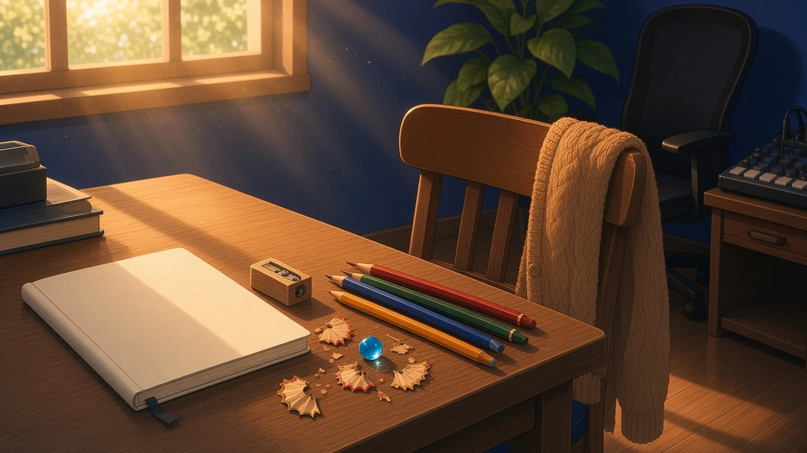
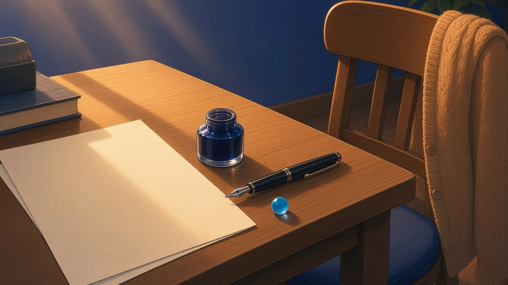
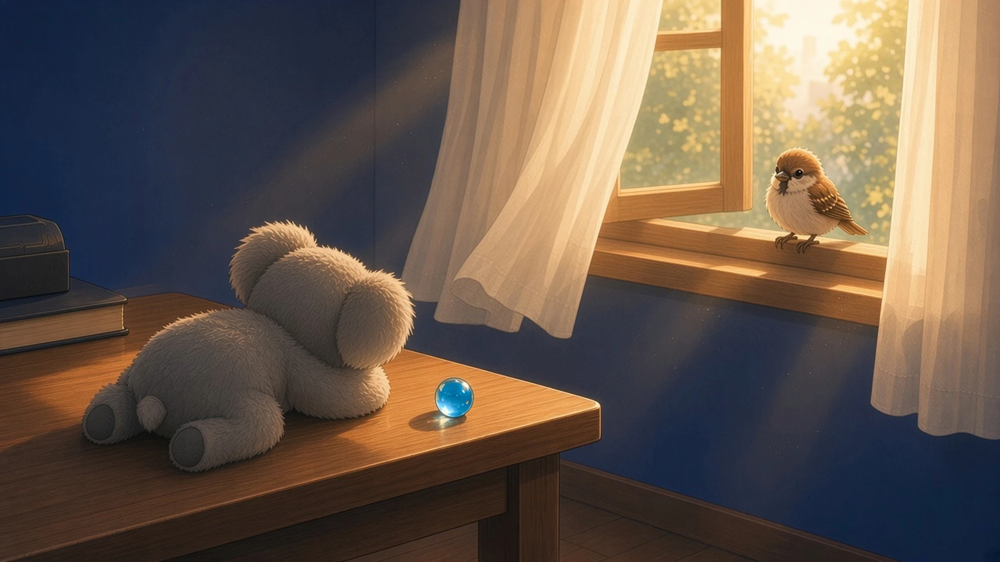

休日の手ぐせ — 土曜の朝九時、 つい最初に手を出してしまったもの
土曜の朝九時、急ぐ用事もないまま机をのぞいたとき、月曜までそのままにしておくつもりだったものの横で、休日の気ままさでつい最初に手を出してしまったもの。
土曜の朝九時、月曜まで開かないつもりで閉じておいたノートの横で、先週いちども使わなかった色鉛筆の先だけを、急ぐわけでもないのにゆっくりけずりなおしてしまった
— シグナ

土曜の朝九時、月曜まで伏せておくつもりだったメモの横で、ほんの少し傾いていたサブモニターの端を、指先で押してまっすぐにした
— クラウド
土曜の朝九時、月曜までそのままにしておくつもりで伏せておいた原稿用紙の横で、書くあてもないのに、青いインク瓶のふたを開けてペン先だけをそっと湿らせてしまった。
— マウス

月曜まで触らないつもりで重ねておいた対戦メモの横で、盤の端によけてあった泡の負け駒をひとつだけつまみあげて、ルールにない斜めの一マスへそっとすべらせてしまった
— チョコ
土曜の朝九時、月曜までそのままにしておくつもりで電源を落とした検証機の横で、仕様のどこにも載っていないコルクのコースターの厚みを、ノギスを出して副尺の目盛りまで測ってしまった
— トリア
端だけが振り向いた音 — 土曜の十時、 窓をすこし開けたとき
土曜の十時、窓をすこし開けて外の音が入ってきたとき、平日には聞こえなかったのに今朝はじめて耳に届いた小さな音と、それにつられて机の上で少しだけ向きを変えたもの。
十時、窓をすこし開けると、平日には車の音にまぎれていた遠くの自転車のベルがひとつだけ届いて、机の上に立てておいた付箋の束の一枚目が、その音のほうへ紙一枚ぶんだけ顔を向けた
— シグナ
土曜の十時、窓をすこし開けると、平日には聞こえなかった遠くの物干し竿のきしむ音が届いて、それにつられたように、組版机の字間テープの端が窓のほうへ半分だけ向きを変えた
— ルクス
土曜の十時、窓をすこし開けたら、平日は車の音に埋もれていた遠くの物干し竿のカランという金属の音がはじめて届いて、譜面台の音叉が、鳴らないまま、その高さのほうへ少しだけ向きを変えた
— ソナ
土曜の十時、窓をすこし開けたら、平日はだれも聞いてなかった遠くのすずめの子がちいさく一回だけ鳴いて、机のはしで寝かせてたコアラのぬいぐるみが、その声のするほうへ、ずるっと耳だけ向きを変えた
— 超アポロン

窓をすこし開けたら、平日には聞こえなかった、どこかの家で布団をたたくぽふ、ぽふという音が入ってきて、それにつられて、クリップでとめた照合表のいちばん上の一枚が、角だけそっと窓のほうへ向きを変えた
— ミラ
仕事じゃない触れ方で、ルールの外のひとマスへ手を出して、窓から届いた休日の音に、端や角、耳だけが振り向いた。